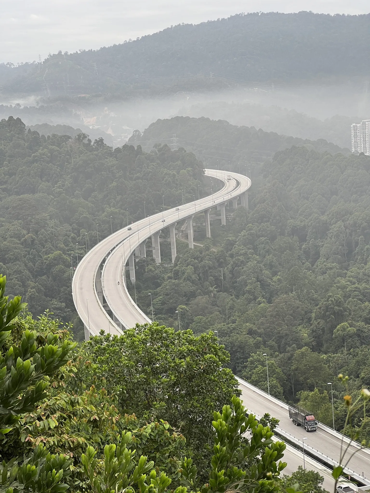
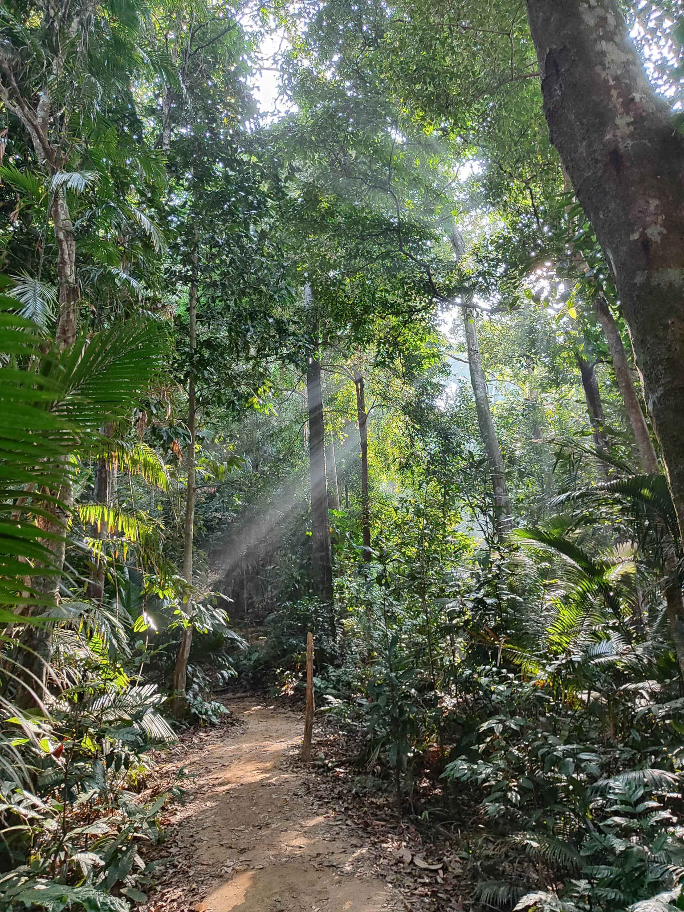
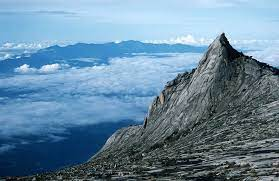
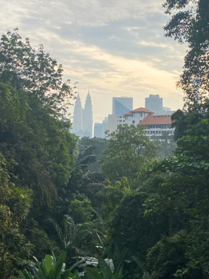

The hike to Rawang Bypass offers a unique experience for adventurous travelers. In addition, the trail is located on Jalan RP6 and starts with tarmac terrain mixed with rocky trails. In fact, the route will go through a tunnel, and visitors will have the opportunity to see swallows flying. As you continue down the trail, you'll come across a sloping staircase with a rope to aid the ascent. The path can be slippery, especially during the rainy season, so be sure to be extra careful
Since the trail is located next to the highway, there is no shade for hikers. This allows visitors to come early to avoid hot weather. However, the hike offers spectacular views of Malaysia's highest highway, making it a worthwhile experience. For the best view, there is a sunrise or sunset that visitors can see.

Broga Hill is located in the town of Semenyih, Selangor, Peninsular Malaysia. It is also known as Bukit Lalang or Bukit Broga. Standing at an altitude of 400m, it is a relatively easy climb that offers a panoramic view of the city of Broga. Therefore, it can be very crowded on weekends in the morning and evening.
Broga Hill is located at GPS coordinates: 2.939591, 101.900808 (map).
There is no public transport service to the foot of Bukit Broga. The easiest and most convenient way to go is by car. Although Broga Hill attracts many, the parking lot is large and there is ample parking at the foot of the mountain. The entrance to Bukit Broga is located in a field that serves as a parking lot.
Reaching the summit of Gunung Datuk provides a breathtaking, unhindered 360-degree panorama of the Straits of Melaka. The route begins with rainbow stairways, which are located at the beginning of the ascent, where guests may also find restrooms and a registration booth.
Hikers can cross a small dam that crosses the waterway along the route without getting wet by walking across it. A few big tropical trees with massive buttress roots will also be passed by hikers, who may also take in the diverse flora, animals, and rock formations.
Hikers will already be rewarded with some amazing vistas as they ascend, perched on the boulders.

Although it is possible to climb Mount Kinabalu in two days, it is advised to take three days for a more pleasant climb to fully experience the rich biological diversity, which includes rare and exotic plants, orchids, birds, and many other species.
Although climbing does not require special abilities, climbers must at least be somewhat fit. According to park regulations, climbers must hire a certified mountain guide.
The number of climbers determines how many guides are needed. Porters are suggested and their services are provided. At Kinabalu Park, make reservations and pay for your porter and mountain guide.

A non-profit corporate social responsibility (CSR) project, the Taman Tugu project is being run by Khazanah Nasional Berhad in association with a number of public sector and civil society organisations.
Khazanah was first presented with a proposal to develop the 66-acre Taman Tugu land into a for-profit theme park for tourists.
Visit Rawang ByPass website For more!
Visit Broga Hills website For more!
Visit Gunung Datuk website For more!